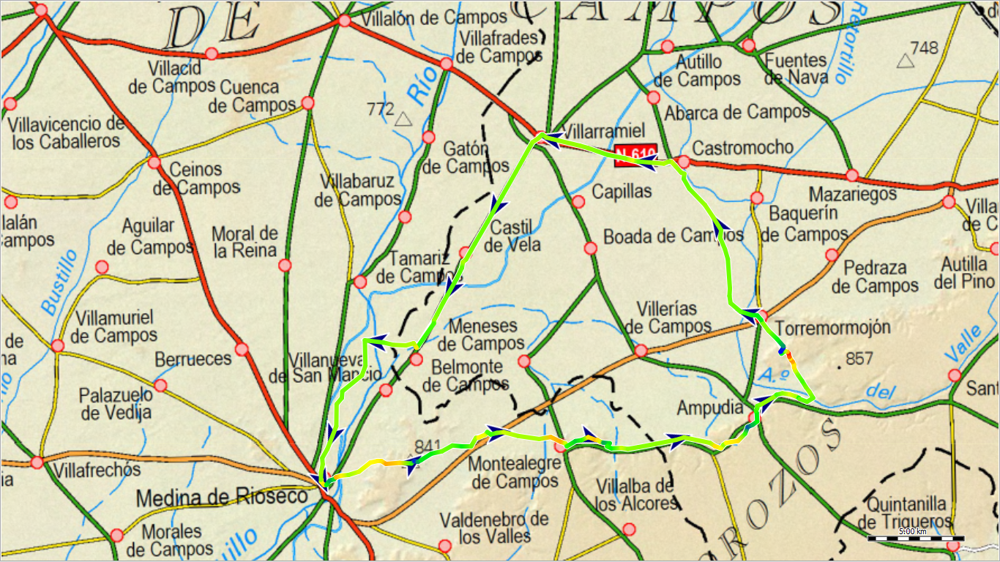
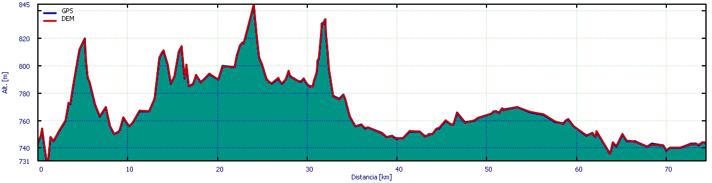

Rioseco Castromocho por Ampudia y Villarramiel¶
Hoja de planificación. Podría contener errores.

.
Ficha técnica¶

| Distancia | Días | Tipo | Ascensión total | Punto más alto | Punto más bajo | Pendiente mayor (ascenso) | Pendiente mayor (descenso) |
|---|---|---|---|---|---|---|---|
| 74 km | 1 | Circular | 330 m | 845 msnm | 731 msnm | 4'5º | -4'9º |
Plan de ruta¶
Descripción¶
.
Localidades¶
- Medina de Rioseco 4647 habitantes, bar, alojamiento, albergue, alimentación.
- Montealegre de Campos 109 habitantes, bar, alojamiento.
- Ampudia 605 habitantes, bar, alojamiento, alimentación, zona de picnic.
- Torremormojón 44 habitantes, bar, zona de picnic.
- Castromocho 225 habitantes, bar, zona de picnic.
- Villarramiel 820 habitantes, bar, alojamiento, alimentación.
- Castil de Vela 64 habitantes.
- Belmonte de Campos 30 habitantes.
Por los alrededores¶
- Abarca de Campos 44 habitantes, bar.
- Baquerín de Campos 30 habitantes, zona de picnic.
- Capillas 75 habitantes.
- Meneses de Campos 124 habitantes, bar, zona de picnic.
- Pedraza de Campos 82 habitantes, zona de picnic.
- Tamariz de Campos 80 habitantes, bar, alojamiento.
- Valdenebro de los Valles 192 habitantes, bar, alojamiento.
- Villabaruz de Campos 29 habitantes.
- Villalba de los Alcores 379 habitantes, bar, alojamiento, albergue, alimentación.
- Villanueva de San Mancio 87 habitantes, alojamiento.
- Villerías de Campos 90 habitantes, zona de picnic.
Consejos¶
- .
Rutas enlazadas¶
Medina de Rioseco:
- La Mudarra Urueña por la Santa Espina y Tordehumos
- Medina Villalón por Moral y Gatón
- Rioseco Villalba Meneses
- Rioseco Villalpando por Villagarcía
Montealegre de Campos:
Castromocho:
Villarramiel:
Castil de Vela:
Belmonte de Campos:
Abarca de Campos:
Baquerín de Campos:
Capillas:
Meneses de Campos:
Pedraza de Campos:
Tamariz de Campos:
Valdenebro de los Valles:
Villabaruz de Campos:
Villalba de los Alcores:
Villanueva de San Mancio: